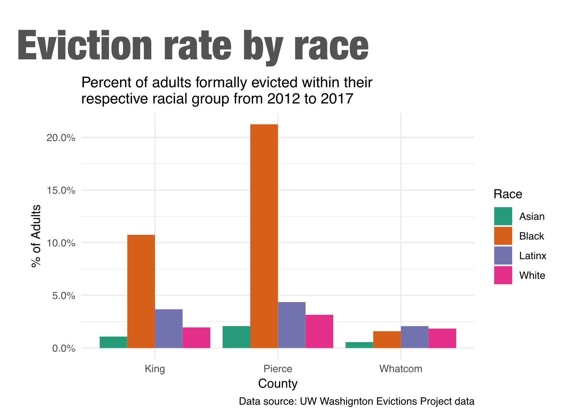
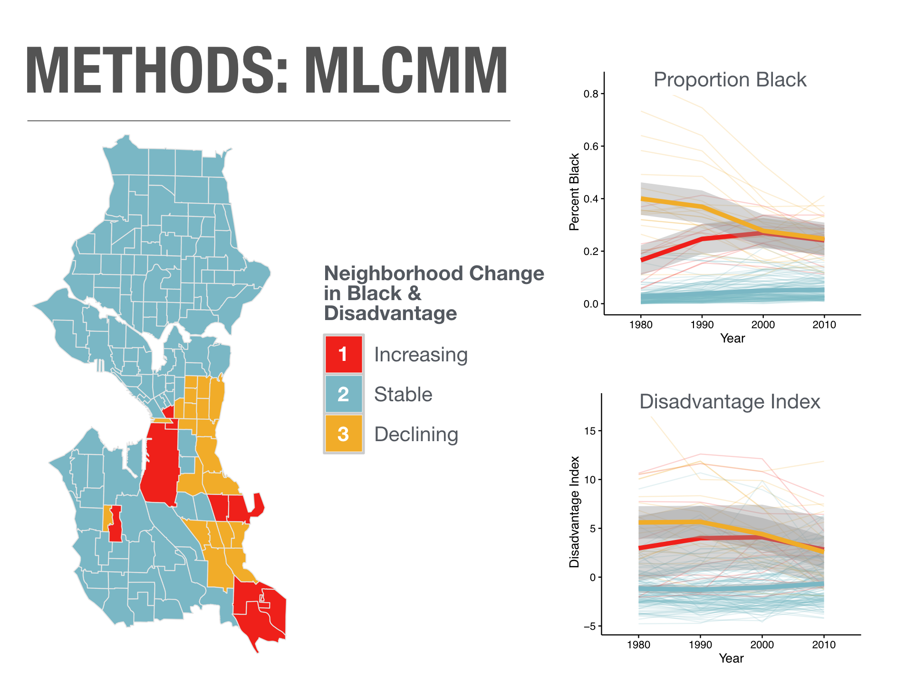
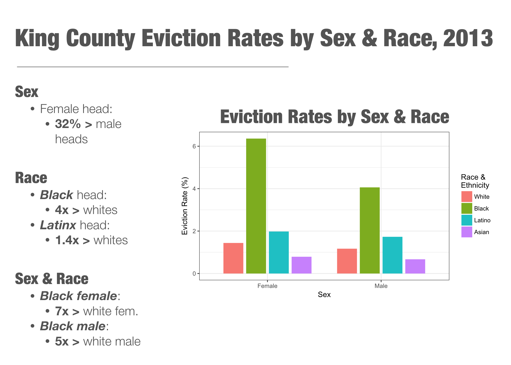
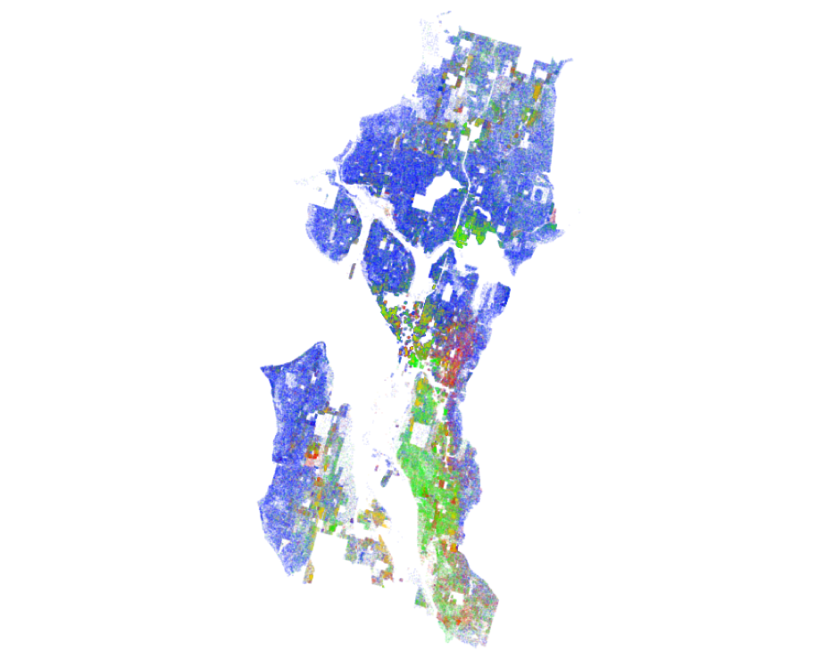
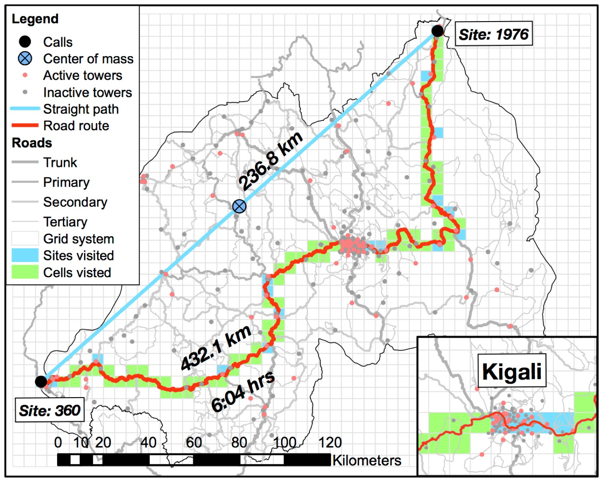

February 7, 2019
This work examines the rate and racial/gender disparities of unlawful detainters--legal evictions--in Washington State.
We find large racial disparities in evictions. Since 2013, 1 in 6 black adults were evicted in Pierce County, Washington and 1 in 11 in King County.
This report is a living document that will be updated frequently as we find new results.


This study examines the relationship between incident severity, neighborhood context, and participant race and patterns in the determination of probable cause and arrest in reactive police contacts. Results indicate that black targets are more frequently subject to arrest overall, particularly in changing neighborhoods and when reporters are white.

This dissertation analyzes how neighborhood diversity, socioeconomics, and housing market dynamics relate to evictions in King County, WA. Results show that neighborhood racial diversity, poverty, low-rent, market demand predict higher rates of evictions. Nearby neighborhood effects, such as low-rent and low-poverty, has a large impact on local eviction rates.

We investigate whether integrated neighborhoods show substantive levels of micro-segregation through physical and social buffers. We find definitive micro-segregation coinciding with social, commercial, and topographic buffers––potentially impeding interaction between racial groups.

We discuss problems with existing mobile phone based measures of mobility and describe new methods for measuring mobility that address these concerns. Our measures of mobility, which incorporate both mobile phone records and detailed GIS data, are designed to address the spatial nature of human mobility, to remain independent of social characteristics of context, and to be comparable across geographic regions and time.
{kind=link}
{kind=link}
{kind=link}